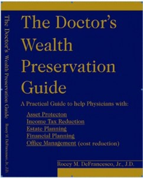
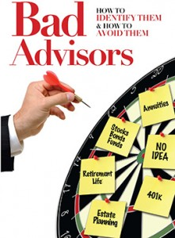

About Us
About Roccy Roccy M. DeFrancesco, Jr., JD, is the Founder of The Wealth Preservation Institute, the creator of the Certified Wealth Preservation Planner (CWPP™), Certified Asset Protection Planner (CAPP™), Certified Medicaid Planner (CMP™) designations and the Co-Founder of the Asset Protection Society.
Roccy received his B.S. degree from Embry Riddle Aeronautical University (where he also received his commercial pilot's license) and his J.D. from Valparaiso University School of Law. Roccy is licensed to practice law in both Indiana and Michigan. Roccy is the author of Bad Advisors: How to Identify Them; How to Avoid Them©, Retiring Without Risk©, The Home Equity Management Guidebook©, The Doctor’s Wealth Preservation Guide©, The Home Equity Acceleration Plan (H.E.A.P.)©, and the editor of a book titled: Wealth Preservation Planning: A “Team” Approach© by The National Society of Accountants.
He is also the creator of the Home Equity Acceleration Plan (H.E.A.P.™)as well as the accompanying H.E.A.P.™ Non-Profit Organization which is dedicated to helping families who are struggling financially to pay their home mortgage payments.
He has also authored a number of advanced asset protection and wealth preservation articles that have been published in Orthopedics Today, The Rake Report by PriceWaterhouseCoopers, the CPA Journal,National Underwriter, Life Insurance Selling, Financial Planning Magazine, Strategic Orthopaedics,General Surgery News, Physician Money Digest, Physician Money Digest OB/GYN Edition, MD Life Magazine, Anesthesiology News, the Indiana Bar Journal, the OH CPA Newsletter, Physician News Digest,American Urological Association News, Society of Financial Service Professionals, Today’s CPA, the New Hampshire Society of CPAs, and Insurance Selling Magazine.
He has also lectured for the Indiana State Medical Association, Ohio State Medical Association, Academy of Medicine of Cincinnati, Mid-America Orthopaedic Association, the MI, OH, IN, and KY CPA Societies, the Orthopedic Surgeon Income Symposium, the Indiana Continuing Legal Education Forum, PAHCOM, BONES, the American Academy of Medical Management, TXMGMA, Association of American Physicians and Surgeons, the Michigan Orthodontics Association, the National Funeral Home Directors Association, Society of Financial Services Professionals, CPA/Law Forum of Illinois and the Elon University Love School of Business, the Society of Financial Service Professionals, National Association of Accountants on advanced asset protection, income and estate tax reduction and overall cost reduction issues for the medium-to-small business owner.

He is also a contributor for the Financial Services Journal (www.fsonline.com), www.financialcounsel.com, www.producersweb.com, www.mommd.com and CNBC’s Open Exchange Program.
One-on-One With Roccy
How did I learn what I needed to learn in order to write my Bad Advisors book?
Imagine if you could take 2.5 years off of work to research advanced estate planning, life insurance and annuities, stock market risk, long-term care, Medicaid planning, asset protection, income tax planning strategies, etc. That’s essentially what I was able to do back in 1998.
Research and aligning myself with the best experts in their fields
In addition to the 2.5 years of hard core research I did back in 1998, for the last 9+ years I’ve spent a significant amount of my time not trying to make money selling products or services; but instead I spent a significant amount of time researching any and every topic/concept/product I could find that affects a person’s wealth.
Many times I am able to research topics/concepts/products on my own, but many times I’ve had to recruit others to help me break them down. I’ve been very lucky that some of the top experts in their fields (law, tax planning, insurance, annuities, etc.) have given me their time to help me learn various subjects and break down different topics/concepts/products that need to be reviewed.
When you have the desire to research and have the best resources in the country help along the way, there is little wonder why I’m able to bring a unique perspective to the book Bad Advisors.